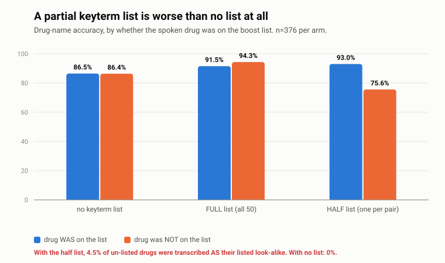
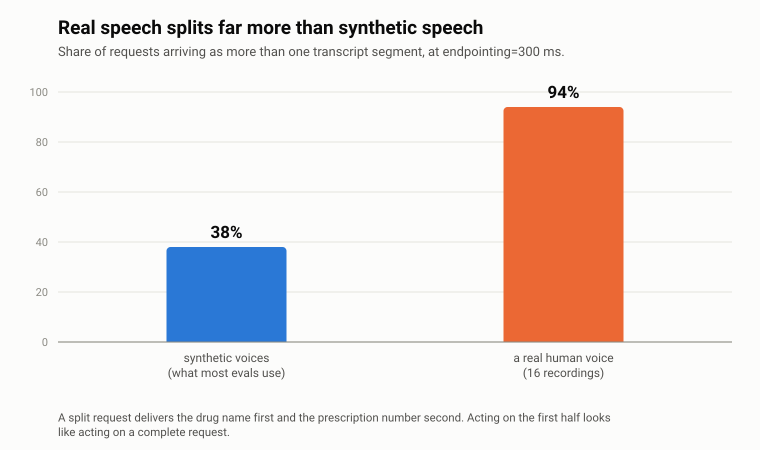
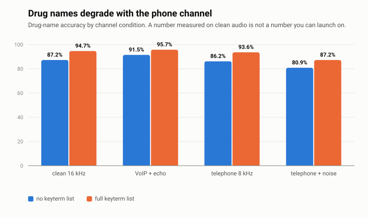

Is Deepgram good enough for a pharmacy refill line?
A pharmacy wants a phone line where patients call to refill their medicines.
Before switching it on, somebody has to check whether the speech recognition
is good enough, and how you would know if it stopped being good enough.
I tested it on 648 recordings. Here is what happened.
648 recordings · 67 minutes of audio · 4 qualities of phone line ·
total cost to run $0.93 · by
Shivani Madan
The short version
The good news. It hears prescription numbers perfectly. 188 of
them, not one mistake. And it never makes things up: played silence, hold music
and keypad beeps, it stayed quiet every single time. Some systems invent whole
sentences out of hold music.
The problem. Medicine names that sound alike get swapped for
each other. Not garbled into nonsense, but swapped for a different real
medicine, which is far worse, because the result looks perfectly normal and
nobody downstream notices.
The surprise. You can give the system a list of medicine names
to listen out for. Giving it all of them helps. Giving it half of
them, which is what a pharmacy would naturally do by listing its best sellers,
made the medicines left off the list get worse, and start coming back as
the names of the ones on it.
Neither problem means switching vendors.
Both are about how the phone system is built around the speech recognition.
Hear it go wrong
All of these are computer-generated voices, so anyone can recreate them
from the code. Press play, then read what came back.
1. The same recording. One setting changed. A different medicine.
Nothing about the audio changes between these two results. The only
difference is whether the system was given a list of medicine names to listen for.
what was said
I'm calling about cyclosporine 100 milligrams. My date of birth is August nineteenth, nineteen forty one.
no word list
I'm calling about cyclosporine one hundred milligrams. My date of birth is 08/19/1941.
half a word list
I'm calling about cycloserine one hundred milligrams. My date of birth is 08/19/1941.
Cyclosporine is an anti-rejection drug for transplant patients.
Cycloserine treats tuberculosis. Both are real, and both get dispensed. The sentence
reads perfectly, so nothing flags it. Adding a half-finished word list caused this.
With no list, the same recording came out right.
2. The same words, once in studio quality and once down a phone line
Same speaker, same sentence. The second version has been put through a
normal telephone connection.
studio quality
I'd like a refill on amiodarone two hundred milligrams. Prescription number 3562773.
phone quality
I'd like a refill on Ami order on two hundred milligrams. Prescription number 3562773.
+ half a word list
I'd like a refill on amlodipine. On two hundred milligrams. Prescription number 3562773.
“Ami order on” is obvious gibberish, and a pharmacist
would spot it immediately. “Amlodipine” is a blood-pressure tablet, and nobody
spots that. Notice the prescription number survived all three versions.
3. A recording with nobody speaking at all
Hold music. A real phone line is full of this: music, dial tone,
keypad beeps, background hiss.
what it typed
(nothing at all)
Nothing, on all 24 no-speech recordings, under every
setting. This matters more than it sounds. A system that invents a sentence out of
hold music creates a prescription request with no patient behind it, and there is
nobody to correct it.
The three findings

Half a list is worse than no list. The medicines left off the
list did not just get a bit worse. They started coming back as the names of
the medicines that were on it. Every single one of those swaps went in that
direction, never the other way, and with no list at all it never happened once. A normal
test would have looked only at the medicines on the list, seen them improve, and called
this a success.

Real people get cut off; computer voices mostly do not.
The system decides you have finished talking when you pause, and people pause
in the middle of reading out a seven-digit number. So the medicine name arrives first,
and the prescription number arrives separately a moment later. The first half looks like
a complete request. I tried every setting and nothing fixed it. Had I tested only on
computer voices, I would have reported this problem at about a third its real size.

Phone quality matters, and a full word list helps. It takes
a normal phone call from 86% to 94%. That is a real improvement and worth switching on.
It is just not the 98% this particular job needs, which is why the fix is to have
the system repeat the medicine name back to the caller rather than to go looking for a
different supplier.
The checklist, and whether it passed
I wrote down what “good enough” has to mean before looking at the
results, with a reason for every number. The pharmacy would set its own. The test runs
automatically and fails loudly if a future update makes any of this worse.
What was checked
Result
Needed
Swapped one real medicine for another
never
never
PASS
Got the medicine name right (phone quality)
94%
98%
FAIL
Got the prescription number right
100%
95%
PASS
Made something up when nobody spoke
never
never
PASS
Got the date of birth right
97%
90%
PASS
Made ordinary speech worse
no
no
PASS
Time from caller stopping to text appearing
2.0 s
2.5 s
PASS
Requests arriving in pieces
88%
10%
FAIL
What would fix it
Have it read the medicine name back and wait for a yes. The 94% is
only acceptable if a mistake gets caught in the conversation. Without that step, roughly
one call in sixteen carries a wrong medicine name into the pharmacy’s queue.
Wait for the whole sentence before doing anything. Collect the
pieces and treat them as one request, rather than acting on the first piece that
arrives.
Use the complete list of medicines, or none at all. Never a
partial one.
Send uncertain medicine names to a human instead of guessing.
What this test cannot tell you
No real pharmacy calls were used. Those are private medical records.
The real-voice recordings here are 16 clips in one person’s voice, which is enough to
prove a problem exists but not enough to say how big it is across all callers.
I was wrong twice about the computer voices. I assumed they would
make the results look better than reality. They made word accuracy look worse
and the cut-off problem look smaller. That is the main reason the real
recordings mattered.
Timings were measured from one laptop on one internet connection,
so they include the time spent travelling to the servers and back.
Only single sentences were tested. No back-and-forth
conversation, no interrupting.
The medicine pairs are taken from a published list of names that pharmacists really do
mix up, kept by the Institute for Safe Medication Practices. Every recording on this page
was generated by computer; nothing here is a real patient or a real call.